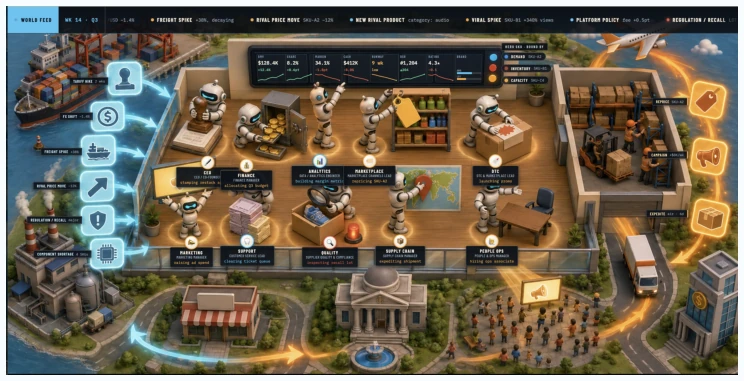
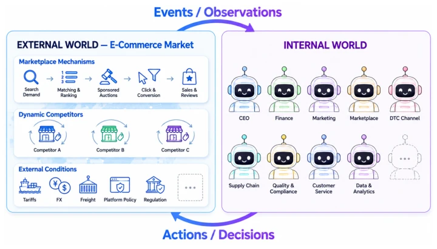

This paper attempts to fill the "last mile" of enterprise AGI using MiniCorp, essentially building a replayable enterprise simulator. The highlight lies in that it solves the problems of scarce vertical enterprise data and missing counterfactual deduction, being more flexible than static archives like the Enron corpus. But to be a bit sharp, the so-called "autonomous company" is still limited by a fixed decision catalog, Agents seem more like filling out forms rather than truly operating. More critically, if the fidelity of external market simulation is insufficient, trained Agents will only "overfit to the simulator" and cannot transfer to real business environments. However, being able to generate longitudinal data with decision chains and feedback does indeed provide a new tool for evaluating long-term strategic capabilities, although there is still a distance from a true "self-running company", and it requires extremely high LLM reasoning capabilities.
研究动机Motivation
现有 Agent 多聚焦单一任务，如 SWE-bench [Jimenez et al., 2024] 或 τ2-Bench [Barres et al., 2025]，缺乏持续组织视角。企业运营决策复杂，后果随时间显现，且真实数据因隐私受限（如 Spirit Airlines 数据拍卖）。历史档案（如 Enron [Klimt and Yang, 2004]）仅记录既定事实，缺乏上下文且无法回答“如果当时决策不同会怎样”的反事实问题。现有基准（如 MerchantBench [Shi et al., 2026]）多为单智能体或短期任务，无法评估多角色协调与长期战略。MiniCorp 旨在通过模拟持续互动的市场与组织，生成连接决策与后果的纵向数据，支持强化学习与评估，解决数据稀缺与静态性问题。
Existing Agents mostly focus on single tasks, such as SWE-bench [Jimenez et al., 2024] or τ2-Bench [Barres et al., 2025], lacking a continuous organizational perspective. Enterprise operational decisions are complex, consequences manifest over time, and real data is limited due to privacy (e.g., Spirit Airlines data auction). Historical archives (such as Enron [Klimt and Yang, 2004]) only record established facts, lack context, and cannot answer counterfactual questions like "what if decisions were different at that time". Existing benchmarks (such as MerchantBench [Shi et al., 2026]) are mostly single-agent or short-term tasks, unable to evaluate multi-role coordination and long-term strategy. MiniCorp aims to generate longitudinal data connecting decisions and consequences by simulating continuously interacting markets and organizations, supporting reinforcement learning and evaluation, solving data scarcity and static issues.
MiniCorp adopts a dual-world interaction architecture: external market and internal Agent company. The external world simulates consumers, competitors, platform mechanisms (search, advertising, inventory), built based on Capitalism II logic and empirical data, ensuring market feedback conforms to real business laws (such as price elasticity, stockout impact). Specifically including search demand generation, product matching and ranking, click conversion models, sponsored search auctions, and dynamic competitors. The internal company consists of fixed roles, collaborating via email/chat, rather than ad-hoc task groups. Core innovations include: 1) Checkpointing mechanism, allowing the same state to be replayed under different decisions, generating counterfactual data; 2) Fidelity assessment adopts Pattern-oriented modeling [Grimm et al., 2005], verifying system-level response patterns rather than single values; 3) Role responsibility separation, decisions require approval, and external world parameters are invisible to Agents, forcing Agents to infer mechanisms from business data. Data flow is: Market state export -> Agent read/communicate/propose -> CEO approve -> World state update -> Feedback loop.

Figure 1: The simulated e-commerce environment where autonomous agent-run company is interacting with an exogenous external world.

Figure 2: Overview of MiniCorp’s interaction between the external world model and the internal AI agent team for an autonomous e-commerce company.
Experiments are divided into fidelity and organizational authenticity assessment. Fidelity tests show that responses to price adjustments, temporary discounts, stockouts, and ad paths are consistent with empirical studies (e.g., stockouts lead to long-term sales decline [Anderson et al., 2006], ads bring delayed organic gains [Quaker, 2025]). Organizational authenticity is verified through work item tracing, 58% of work is inherited from the previous cycle, matching real enterprise characteristics. Results show Agents can coordinate across roles and maintain ad exploration under weak early rewards. The experiment did not set traditional baselines, but validated system effectiveness through pattern matching, proving the simulator can generate longitudinal data consistent with business logic, supporting Agents learning long-term strategy.